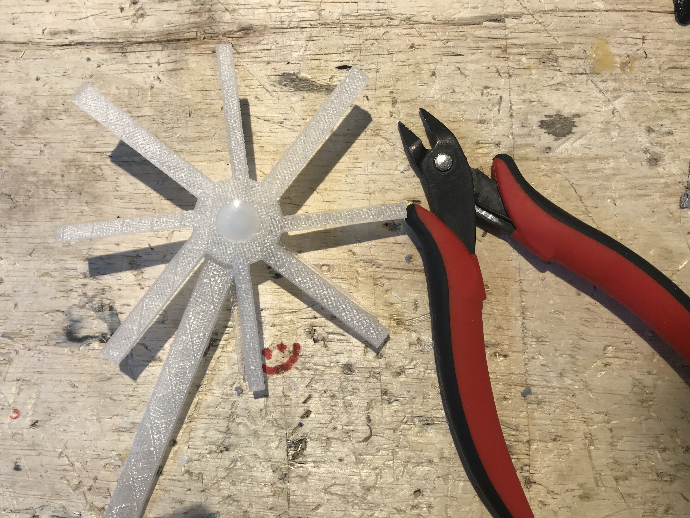
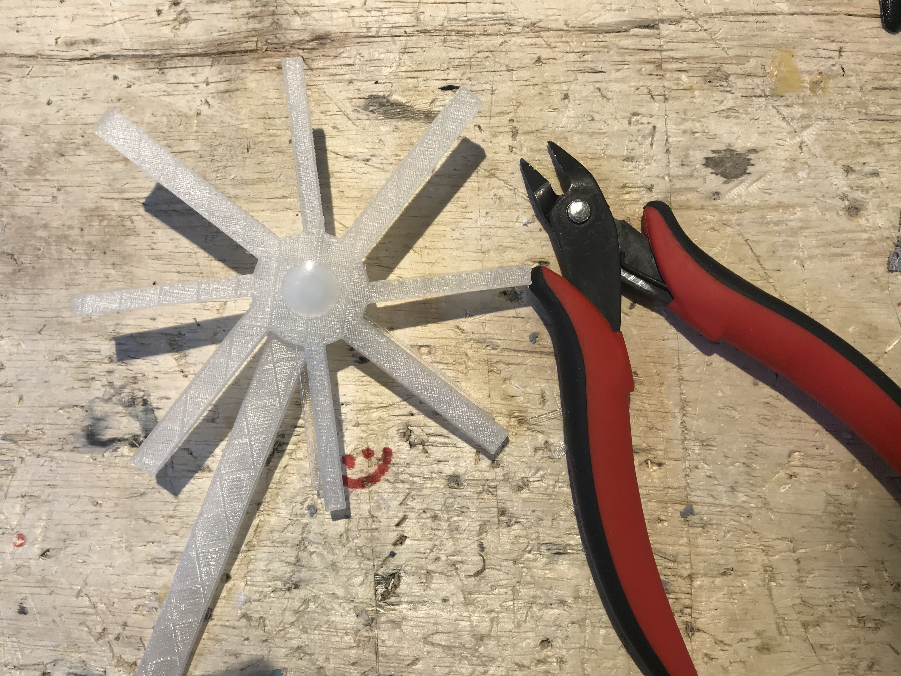
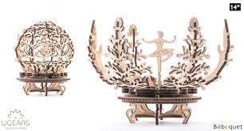
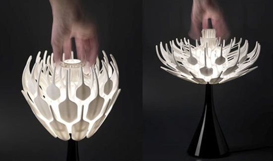
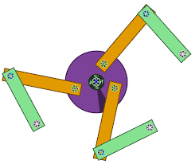
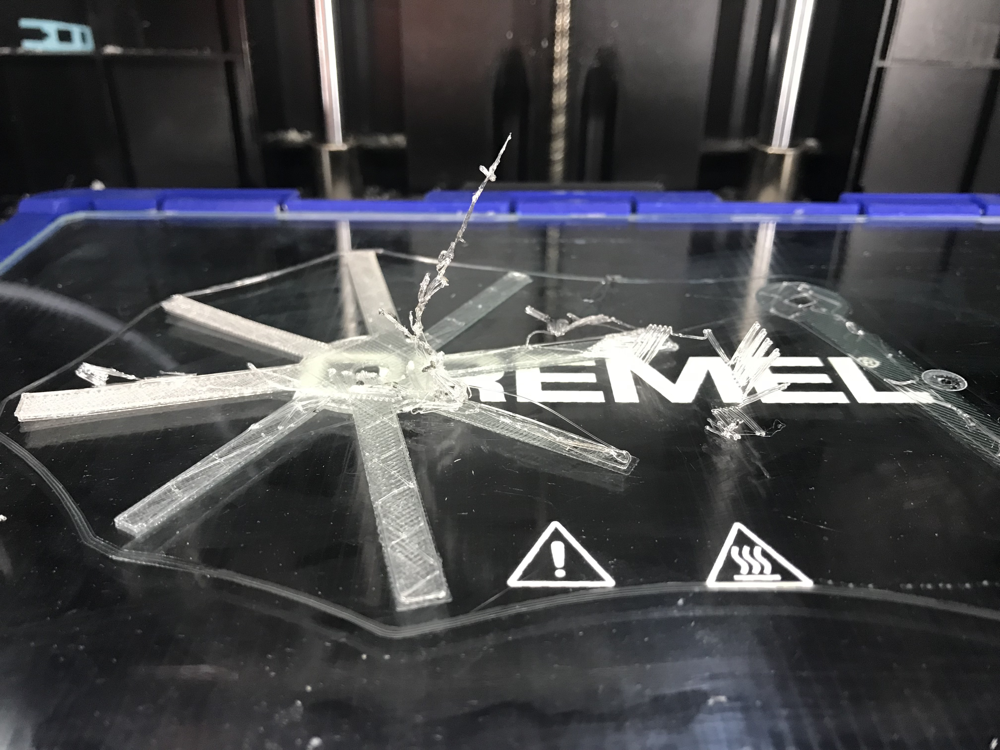
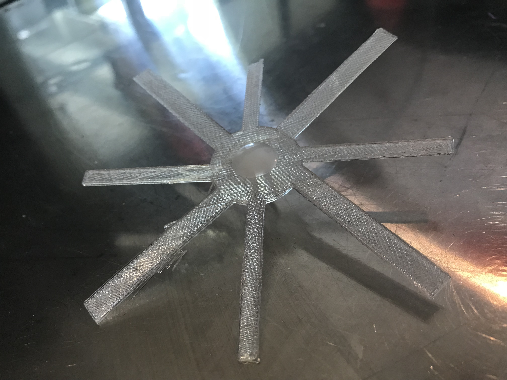
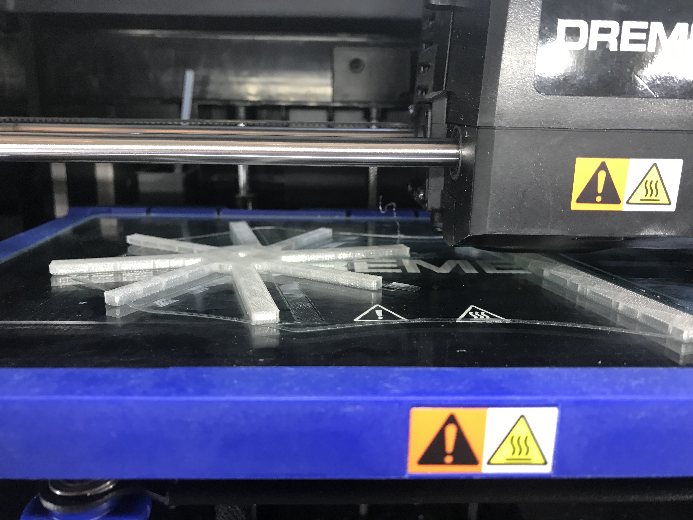
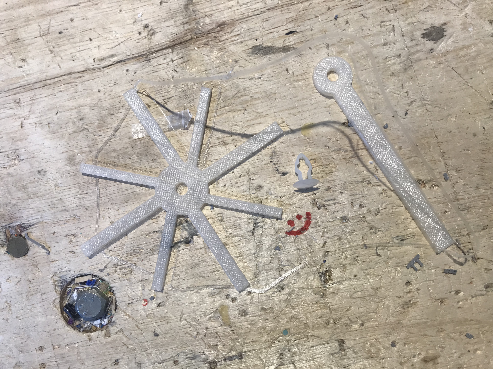

Bella's A4: Moving parts
 

Process
- Step 1: Inspiration Understanding the requirements: An assembly of more than one part. At least one part moving. For this assignment I looked towards 3D printing mechanism as my inspiration. I found complex designs online but had to simplify my options to make sure my own design would work.
- Step 2: OnShape + Dremel 3D slicer
- Step 3: 3D Printing + Assembly
  
I used OnShape to draw two parts: the fan and support. In this stage I had to redraw the model two times because I originally drew in inches instead of mm. Later I assembled the pieces together with the rivet piece the class got from Joshua. I also used Dremel to slice my model to print. This part was no brainer from the last assignment.
I ran into 3D Printing problems again. Parts of my design would not stick to the bed. I consulted with Area01 staff and they recommended I reprint. I used the broken piece to test if the rivert would fit. It does!
 
Source File
OnShape Link STL File GcodeMachine Settings: No Laser Printing this time around. Dremel set to 325 degrees for PLA and Bed Tempature of 45 degrees.
Kit Design and Execution
- Design Description: I drew inspiration from Pin Wheels as my moving model.
- Execution: I used OnShape for my CAD model and 3D Printed the pieces to attach to the rivet piece. The entire model was created in OnShape and saved as a stl file to be 3D printed. Dremel 3D slicer software was used to create the gcode.
 
Peer-Teacher Attribution
I had Area01 staff help me adjust the Dremel printer. Thank you Joshua for the push-in rivets !